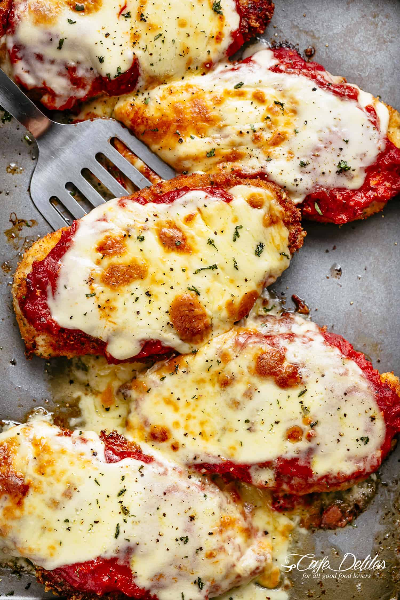

Chicken Parmesan

Ingrediants
- 2 large eggs
- 1 tablespoon minced garlic
- 2 tablespoons fresh chopped parsley
- Salt and pepper to season
- 2 large chicken breasts
- 1 cup Panko breadcrumbs
- 1/2 cup breakcrumbs
- 1/2 cup fresh grated parmesan cheese
- 1 teaspoon garlic or onion powder
- 1/2 cup olive oil for frying
- 1 tablespoon olive oil
- 1 large onion chopped
- 2 teaspoons minced garlic
- 14 onces tomato puree
- 1 teaspoon dried Italian herbs
- 1 teaspoon sugar
Directions
- Preheat oven 430°F | 220°C. Lightly grease an oven tray (or baking dish) with non stick cooking oil spray; set aside.
- Whisk together eggs, garlic, parsley, salt and pepper in a shallow dish. Add chicken into the egg, rotating to evenly coat each fillet in the mixture. Cover with plastic wrap and allow to marinate for at least 15 minutes
- When chicken is ready for cooking, mix bread crumbs, Parmesan cheese and garlic powder together in a separate shallow bowl. Dip chicken into the breadcrumb mixture to evenly coat.
- Heat oil in a large skillet over medium-high heat until hot and shimmering. Fry chicken until golden and crispy, (about 4-5 minutes each side).
- Place chicken on prepared baking tray / dish and top each breast with about 1/3 cup of sauce (sauce recipe below). Top each chicken breast with 2-3 slices of mozzarella cheese and about 2 tablespoons parmesan cheese. Sprinkle with basil or parsley.
- Bake for 15-20 minutes, or until cheese is bubbling and melted, and the chicken is completely cooked through.
- Heat oil in a medium-sized pot. Fry onion until transparent (about 3 minutes), then add the garlic until fragrant (about 30 seconds).
- Add the tomato puree, salt and pepper to taste, Italian herbs and sugar (If using). Cover with lid to simmer for about 8 minutes, or until sauce has thickened slightly. Taste test and adjust salt and pepper, if needed.
To view the original recipe, click here.
Contant Me
Have a question? Email me!
Click here to email
or
The University of Montana
32 Campus Dr
Missoula, MT 59812
italk@umontana.edu